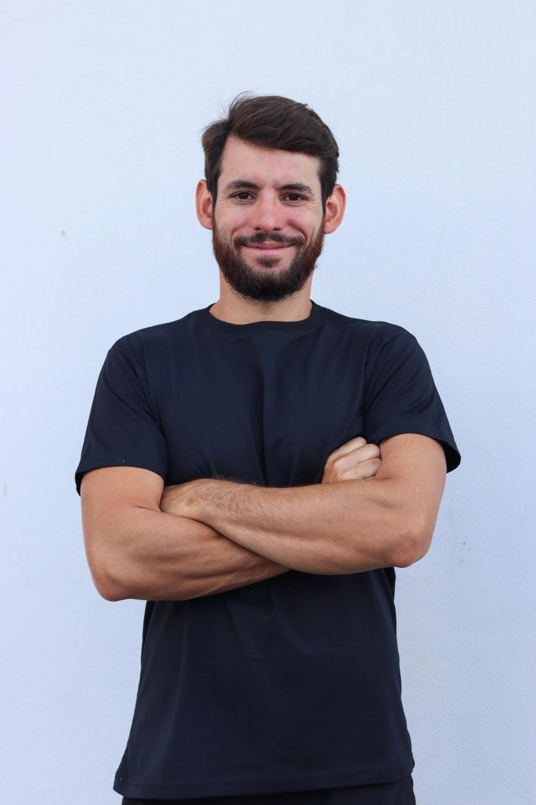

Medo de hipoglicemia
Você começa o treino preocupado com uma queda e nem sempre consegue concluir o que planejou.
Consultoria online de treino
Treino individualizado, análise dos padrões glicêmicos e acompanhamento próximo para você evoluir com mais segurança e autonomia.

Especialista em Fisiologia e Prescrição Clínica do
Exercício
CREF MG-037405
O problema não é falta de esforço
Você começa o treino preocupado com uma queda e nem sempre consegue concluir o que planejou.
O mesmo treino parece gerar respostas diferentes e fica difícil entender o que realmente aconteceu.
Planilhas prontas ignoram sua rotina, seu objetivo e as particularidades de treinar com diabetes.
Acompanhamento de verdade
A consultoria conecta planejamento de treino, resposta glicêmica e acompanhamento. As decisões são feitas a partir do que acontece na sua rotina, não de uma fórmula pronta.
Entendemos seu histórico, objetivos, rotina, experiência de treino e principais dificuldades com a glicemia.
Você recebe o treino em uma plataforma completa e fácil de acessar pelo iOS, iPhone, iPad, notebook ou web, com vídeos de execução de todos os exercícios.
Acompanhamos treinos, esforço, recuperação e padrões glicêmicos para orientar os próximos passos.
O que você recebe
Treinos construídos para seu nível, disponibilidade, objetivo e local de treino.
Análise da relação entre treino, glicemia, insulina ativa, horários e recuperação.
Contato pelo WhatsApp para feedbacks, dúvidas e ajustes ao longo do acompanhamento.
O plano evolui com você, em vez de permanecer igual por semanas sem contexto.
Escolha seu acompanhamento
Os dois planos incluem a mesma estrutura de acompanhamento. O que muda é o período de compromisso.
Plano trimestral
R$497
Melhor condição
Plano semestral
R$897
Ao escolher um plano, você será direcionado para conversar comigo pelo WhatsApp.
Quem acompanha você
Sou profissional de Educação Física, especialista em Fisiologia e Prescrição Clínica do Exercício. Dentro dessa área, me especializei no acompanhamento de pessoas com diabetes.
Meu trabalho é transformar dados, sintomas e experiências do dia a dia em decisões mais claras para o seu treinamento.
Você continua sendo acompanhado pela sua equipe de saúde. Na consultoria, meu papel é cuidar do exercício: planejar, observar sua resposta e ajustar o processo para que o treino faça parte da sua vida.
Talles Alves • CREF MG-037405
Próximo passo
Escolha um plano e converse comigo pelo WhatsApp. Antes de começar, eu quero conhecer sua rotina, seus objetivos e suas dificuldades atuais.